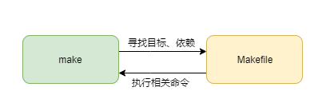

<!DOCTYPE lake>
<p data-lake-id="uaf2bbbe0" id="uaf2bbbe0" style="text-indent: 2em"><span data-lake-id="u8c822260" id="u8c822260">直接使用gcc编译的话,任何修改都需要编译所有的文件,最好的方式就是把工程的编译规则写下来，让编译器自动加载该规则进行编译。</span></p><h2 data-lake-id="SAkA3" data-lake-index-type="2" id="SAkA3"><span data-lake-id="uedbe2ce6" id="uedbe2ce6">make工具和Makefile</span></h2><ul list="ud3f51ebb"><li data-lake-id="u4d6a78f5" fid="u64c30906" id="u4d6a78f5"><strong><span data-lake-id="u14d9b0c4" id="u14d9b0c4">make工具</span></strong><span data-lake-id="u0295e18a" id="u0295e18a">：它可以帮助我们找出项目里面修改变更过的文件，并根据依赖关系，找出受修改影响的其他相关文件，然后对这些文件按照规则进行单独的编译，这样一来，就能避免重新编译项目的所有的文件。</span></li></ul><p data-lake-id="u5f39f8e7" id="u5f39f8e7"><br/></p><ul list="ud3f51ebb" start="2"><li data-lake-id="u2ae4294f" fid="u64c30906" id="u2ae4294f"><strong><span data-lake-id="u8895c8dc" id="u8895c8dc">Makefile文件</span></strong><span data-lake-id="u7a39418b" id="u7a39418b">：上面提到的规则、依赖关系主要是定义在这个Makefile文件中的，我们在其中合理地定义好文件的依赖关系之后，make工具就能精准地进行编译工作。</span></li></ul><p data-lake-id="udfa9e04e" id="udfa9e04e"></p><p data-lake-id="u851141e9" id="u851141e9"><span data-lake-id="u239b9483" id="u239b9483">如果make不存在,可以安装make</span></p><span class="yuque-card-unsupported">[codeblock]</span><h2 data-lake-id="BISsh" data-lake-index-type="2" id="BISsh"><span data-lake-id="u2387515a" id="u2387515a">Makefile尝鲜</span></h2><span class="yuque-card-unsupported">[codeblock]</span><h2 data-lake-id="DRO51" data-lake-index-type="2" id="DRO51"><span data-lake-id="u29e174f3" id="u29e174f3">VSCode配置</span></h2><p data-lake-id="ued43f5b3" id="ued43f5b3"><span data-lake-id="u12b8be18" id="u12b8be18">配置远程的开发环境，参考</span></p><a class="yuque-card-link" href="../Linux%E5%BC%80%E5%8F%91%E6%9D%BF_%E6%B3%B0%E5%B1%B1%E6%B4%BE/vscode%E9%85%8D%E7%BD%AE.html">yuque：yuque</a>